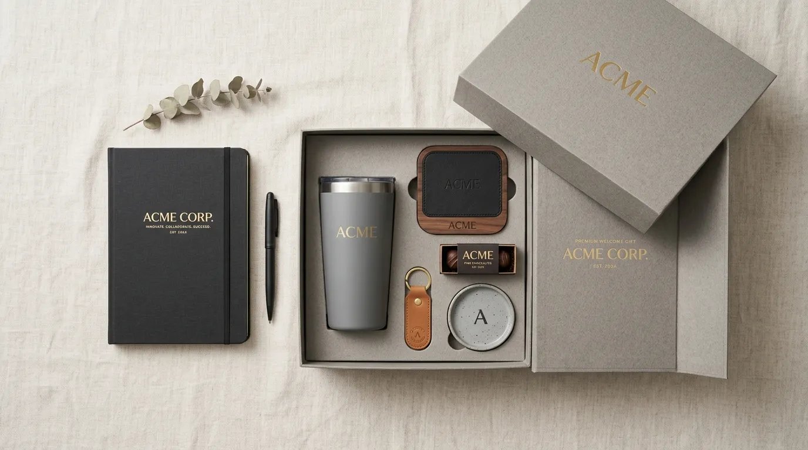
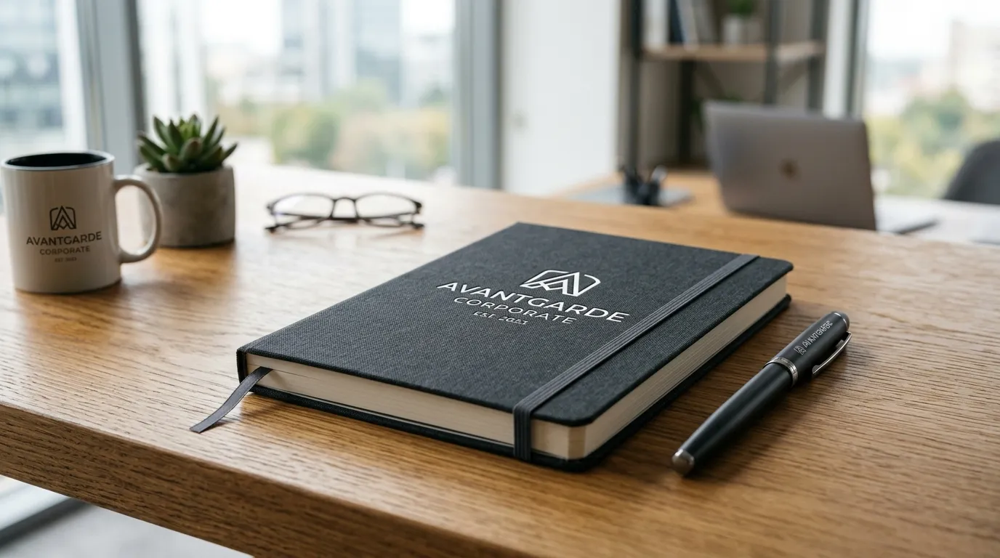

Souvenir Kantor Unik yang Siap Membuat Branding Perusahaan Lebih Mudah Diingat
 Nazhima Nadine
30 Juli 2026
7 Menit Baca
Nazhima Nadine
30 Juli 2026
7 Menit Baca

Souvenir kantor unik adalah barang bernilai fungsional dan estetik yang dirancang khusus untuk mewakili identitas perusahaan, umumnya digunakan sebagai hadiah karyawan, klien, atau peserta acara resmi. Pemilihan souvenir yang tepat dapat memperkuat citra brand sekaligus mempererat hubungan dengan penerima.
Souvenir kantor unik berfungsi sebagai media branding yang bertahan lama. Desain dan kegunaan barang menentukan seberapa efektif pesan brand tersampaikan. Pemilihan bahan, ukuran, dan konsep perlu disesuaikan dengan target penerima. Souvenir yang relevan dengan aktivitas sehari-hari cenderung lebih sering digunakan. Kustomisasi logo dan warna korporat memperkuat konsistensi identitas visual.
- Apa Itu Souvenir Kantor Unik?
- Mengapa Souvenir Kantor Unik Penting untuk Branding Perusahaan?
- Bagaimana Cara Memilih Souvenir Kantor Unik yang Tepat?
- Siapa Target Penerima Souvenir Tersebut?
- Bagaimana Menyesuaikan Anggaran dengan Kualitas Souvenir?
- Konsep Desain Seperti Apa yang Sebaiknya Dipilih?
- Apa Saja Jenis Souvenir Kantor Unik yang Diminati Saat Ini?
- Apa Saja Kesalahan Umum dalam Memilih Souvenir Kantor?
- Tips Praktis Memesan Souvenir Kantor Unik
- Kesimpulan
- FAQ
Apa Itu Souvenir Kantor Unik?
Souvenir kantor unik merujuk pada barang cinderamata yang dibuat dengan desain berbeda dari produk pasaran pada umumnya, biasanya menonjolkan unsur kreativitas, fungsi praktis, dan identitas visual perusahaan. Konsep "unik" di sini mengacu pada kombinasi bentuk, material, atau fitur yang membuat barang tersebut mudah diingat dibandingkan souvenir standar seperti pulpen atau notebook polos.
Souvenir jenis ini umumnya digunakan perusahaan untuk beberapa kebutuhan, di antaranya penghargaan karyawan, hadiah untuk klien atau mitra bisnis, kelengkapan acara internal seperti gathering atau ulang tahun perusahaan, serta merchandise untuk pameran dan seminar.

Karena fungsinya yang beragam, jenis barang yang dipilih juga bervariasi mulai dari perlengkapan kerja, aksesoris digital, hingga barang gaya hidup seperti tumbler dan tas. Nilai penting dari souvenir kantor bukan hanya pada tampilannya, melainkan juga pada seberapa sering barang tersebut digunakan oleh penerima. Semakin sering digunakan, semakin besar peluang logo dan identitas perusahaan terekspos secara berulang, sehingga efek branding menjadi lebih optimal dibandingkan media promosi konvensional yang hanya dilihat sekali.
Mengapa Souvenir Kantor Unik Penting untuk Branding Perusahaan?
Souvenir kantor unik penting karena berperan sebagai pengingat visual yang terus hadir dalam aktivitas penerima, sehingga memperkuat kesan positif terhadap perusahaan dalam jangka panjang.
Ketika sebuah perusahaan memberikan barang yang dirancang dengan baik, penerima cenderung mengasosiasikan kualitas barang tersebut dengan citra perusahaan secara keseluruhan. Barang yang terlihat murahan atau generik justru dapat menimbulkan kesan sebaliknya, sehingga pemilihan souvenir tidak bisa dilakukan sembarangan.
Dari sisi internal, souvenir kantor juga berperan dalam membangun rasa memiliki dan loyalitas karyawan. Pemberian barang yang relevan dengan kebutuhan kerja sehari-hari, seperti perlengkapan meja kerja atau aksesoris digital, menunjukkan bahwa perusahaan memperhatikan kenyamanan tim secara nyata, bukan sekadar formalitas seremonial.
Dari sisi eksternal, souvenir yang diberikan kepada klien atau mitra bisnis berfungsi sebagai bentuk apresiasi sekaligus media promosi yang halus. Berbeda dengan iklan konvensional, souvenir tidak terasa memaksa karena disampaikan dalam konteks hubungan personal, sehingga pesan brand lebih mudah diterima secara positif.
Bagaimana Cara Memilih Souvenir Kantor Unik yang Tepat?
Cara memilih souvenir kantor unik yang tepat dimulai dari memahami target penerima, menyesuaikan anggaran, memilih konsep desain yang relevan, serta memastikan kualitas material sesuai kebutuhan penggunaan jangka panjang.
Siapa Target Penerima Souvenir Tersebut?
Menentukan target penerima adalah langkah dasar yang memengaruhi seluruh keputusan berikutnya, mulai dari jenis barang hingga gaya desain yang digunakan.
Jika souvenir ditujukan untuk karyawan internal, pertimbangan utamanya adalah kepraktisan dan kenyamanan penggunaan sehari-hari, misalnya perlengkapan kerja atau aksesoris ruang kerja. Sementara itu, jika souvenir ditujukan untuk klien atau mitra eksternal, kesan profesional dan elegan biasanya lebih diutamakan agar mencerminkan kredibilitas perusahaan di mata pihak luar.
Perbedaan target ini juga memengaruhi tingkat personalisasi. Souvenir untuk karyawan sering kali dapat dipersonalisasi dengan nama masing-masing individu, sedangkan souvenir untuk klien umumnya lebih menonjolkan identitas brand perusahaan secara umum agar dapat digunakan secara luas.
Bagaimana Menyesuaikan Anggaran dengan Kualitas Souvenir?
Menyesuaikan anggaran dilakukan dengan menetapkan kisaran harga per unit terlebih dahulu, kemudian memilih jenis barang dan bahan yang sesuai dengan kisaran tersebut tanpa mengorbankan kesan kualitas.
Perusahaan tidak selalu perlu memilih barang dengan harga tinggi untuk terlihat berkualitas. Desain yang rapi, kemasan yang menarik, serta konsistensi warna dan logo sering kali memberikan dampak visual yang lebih besar dibandingkan harga barang itu sendiri. Sebaliknya, barang mahal dengan desain yang kurang matang justru dapat terkesan kurang maksimal.
Perlu diperhatikan pula bahwa pemesanan dalam jumlah besar umumnya memengaruhi harga satuan, sehingga perencanaan jumlah kebutuhan sejak awal membantu proses penganggaran menjadi lebih akurat dan efisien.
Konsep Desain Seperti Apa yang Sebaiknya Dipilih?
Konsep desain sebaiknya dipilih berdasarkan identitas visual perusahaan yang sudah ada, seperti warna korporat, gaya logo, dan nilai brand yang ingin ditonjolkan, agar souvenir terasa konsisten dengan citra perusahaan secara keseluruhan.
Beberapa perusahaan memilih konsep minimalis dengan warna netral agar barang terlihat elegan dan mudah dipadukan dengan berbagai gaya. Perusahaan lain memilih konsep yang lebih ekspresif dengan warna berani sesuai identitas brand yang ingin tampil mencolok. Tidak ada konsep yang mutlak lebih baik, karena kesesuaian dengan karakter brand adalah faktor utamanya.
Apa Saja Jenis Souvenir Kantor Unik yang Diminati Saat Ini?
Jenis souvenir kantor unik yang diminati saat ini umumnya mencakup perlengkapan kerja modern, aksesoris digital, produk ramah lingkungan, serta barang gaya hidup yang dapat digunakan di luar lingkungan kantor.
Perlengkapan kerja modern seperti organizer meja, notebook dengan desain custom, dan alat tulis premium tetap menjadi pilihan populer karena fungsinya yang praktis dan relevan dengan aktivitas kerja harian.
Aksesoris digital seperti power bank, kabel data multifungsi, dan stand ponsel juga banyak dipilih karena mengikuti kebutuhan gaya hidup yang semakin bergantung pada perangkat elektronik.
Produk ramah lingkungan turut memengaruhi pilihan souvenir kantor. Banyak perusahaan mulai beralih ke bahan yang lebih berkelanjutan, seperti tumbler pengganti botol plastik sekali pakai atau tas kanvas yang dapat digunakan berulang kali, sebagai bentuk komitmen terhadap isu lingkungan sekaligus memperkuat citra positif perusahaan.
Barang gaya hidup yang tidak kalah diminati adalah barang yang dapat digunakan di luar konteks kerja, misalnya tas ransel, jaket, atau tumbler dengan desain kasual. Barang seperti ini memperluas eksposur brand karena dapat digunakan penerima dalam berbagai aktivitas sehari-hari, tidak terbatas pada lingkungan kantor saja.
Apa Saja Kesalahan Umum dalam Memilih Souvenir Kantor?
Kesalahan umum dalam memilih souvenir kantor meliputi pemilihan barang yang terlalu generik, mengabaikan kualitas material, tidak mempertimbangkan kebutuhan penerima, serta melewatkan proses uji sampel sebelum produksi massal.
Salah satu kesalahan yang sering terjadi adalah memilih barang hanya berdasarkan harga termurah tanpa mempertimbangkan daya tahan dan kesan visualnya. Barang yang cepat rusak atau terlihat murahan justru dapat menurunkan citra perusahaan di mata penerima, alih-alih memperkuatnya.
Kesalahan lain adalah kurangnya perhatian terhadap detail cetakan logo, seperti ukuran yang tidak proporsional atau warna yang tidak sesuai dengan panduan identitas visual perusahaan. Detail kecil seperti ini sering diabaikan, padahal berpengaruh besar terhadap kesan profesionalitas barang tersebut.
Selain itu, banyak perusahaan yang langsung memesan dalam jumlah besar tanpa melakukan pengecekan sampel terlebih dahulu. Langkah ini berisiko menimbulkan kekecewaan apabila hasil akhir produk tidak sesuai ekspektasi, sehingga uji sampel sebaiknya selalu dilakukan sebelum proses produksi massal dijalankan.
Tips Praktis Memesan Souvenir Kantor Unik
Beberapa tips yang dapat membantu proses pemesanan souvenir kantor menjadi lebih efisien meliputi perencanaan jauh hari sebelum acara, penentuan konsep desain di awal, serta komunikasi detail teknis secara jelas kepada pihak produksi.
Perencanaan sejak jauh hari memberi ruang waktu yang cukup untuk proses desain, revisi, produksi, hingga pengiriman, sehingga risiko keterlambatan dapat diminimalkan. Selain itu, menentukan konsep desain sejak awal membantu proses produksi berjalan lebih terarah tanpa perubahan besar di tengah jalan yang dapat memperlambat keseluruhan proses.
Komunikasi detail teknis, seperti ukuran, jenis material, warna, dan posisi logo, juga sangat penting untuk memastikan hasil akhir sesuai dengan ekspektasi. Semakin jelas informasi yang disampaikan sejak awal, semakin kecil kemungkinan terjadi kesalahan produksi yang memerlukan revisi berulang.
Butuh Souvenir Kantor Unik untuk Branding?
Konsultasikan kebutuhan souvenir kantor unik Anda dengan tim kami untuk mendapatkan rekomendasi terbaik sesuai brand dan anggaran.
Konsultasi SekarangKesimpulan
Souvenir kantor unik merupakan investasi branding jangka panjang yang efektivitasnya sangat dipengaruhi oleh ketepatan pemilihan konsep, target penerima, dan kualitas material. Perusahaan yang mempertimbangkan aspek fungsional, konsistensi identitas visual, serta kebutuhan nyata penerima cenderung mendapatkan hasil branding yang lebih maksimal dibandingkan sekadar memilih barang secara acak. Perencanaan yang matang sejak tahap konsep hingga produksi menjadi kunci utama agar souvenir kantor benar-benar memberikan dampak positif bagi citra perusahaan.
FAQ Seputar Souvenir Kantor Unik